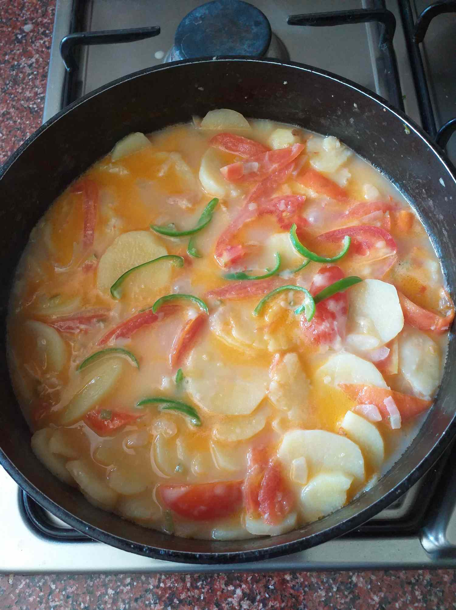

Home
Kewa Datshi

Bhutanese go to dish
Perfect! Kewa Datshi (potato and cheese stew) is another classic Bhutanese dish, milder than Ema Datshi but still rich and comforting. Here’s how you can prepare it:
Ingredients
- Potatos – 4–5 medium (thinly sliced or diced)
- Onion – 1 large (sliced)
- Tomatoes – 2 medium (optional, adds tanginess)
- Garlic – 3–4 cloves (chopped)
- Green chilies – 4–6 (adjust to your taste)
- Butter – 1–2 tbsp
- Cooking oil – 1 tbsp
- Cheese – about 200 g
- Water – 2 cups
- Salt – to taste
- Coriander leaves – for garnish